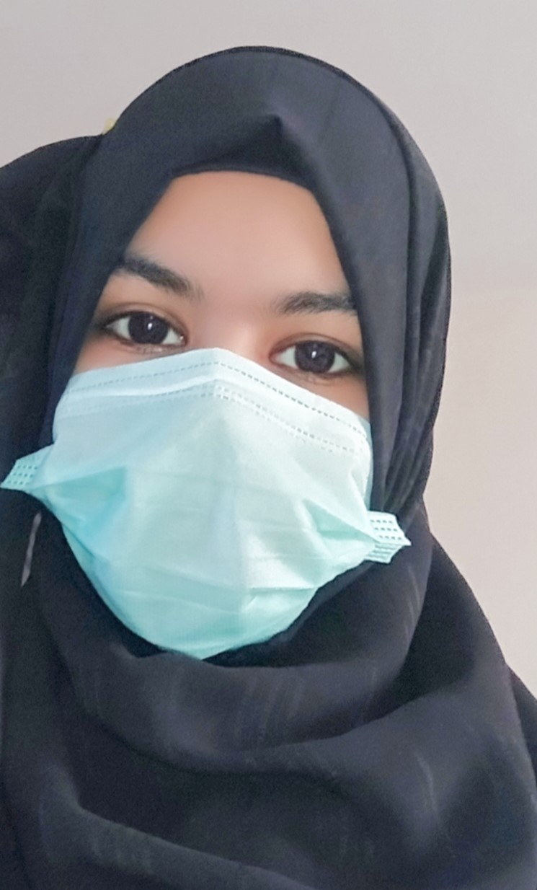

Web Developer & Designer
0319-3526320 | qraima1@gmail.com | st. 12/A Baldia Town Karachi Pakistan
I am an IT student passionate about web development, with experience in front-end technologies like HTML, CSS, JavaScript, and Next.js. My previous role in quality control taught me attention to detail and a strong commitment to standards. I am eager to grow my skills and contribute to innovative tech projects.
Stars Children Academy | Matriculation of Science
Government Degree Girls Science,Arts& Commerce College | Intermediate of Science
Printer Operator
One year experience as a printer operator of HP Printing Machine at Barrett Hodgson.
Quality Control Inspector
Conducted optical inspection of syrup bottles to ensure quality standards, identifying and removing defective products from the production line.